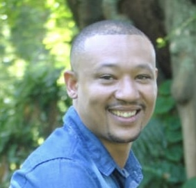

Llewellyn Booth
I build and run hybrid cloud — Microsoft Azure and Azure Local / HCI — for enterprise clients. 20+ years in infrastructure, virtualisation and networking; Azure Solutions Architect Expert.
This page has been viewed … times.
About
Who I am

I design, build and run IT infrastructure that businesses depend on — hybrid environments (Azure Local / HCI, VMware, Hyper-V), Windows Server, Azure Cloud, and networking with a focus on SD-WAN (Cisco Meraki). Across two decades I've delivered scalable, reliable systems and led the operational side of large migrations.
I like the hard problems: performance tuning, untangling cross-environment integrations, and getting to a real root cause rather than a plausible one. I work well solo or embedded in a cross-functional team.
Outside of client work I'm continually building — a home lab for hybrid automation, certification study, and projects like this site.
Skills
What I work with
Azure & hybrid cloud
- Microsoft Azure (IaaS / PaaS)
- Azure Local (Azure Stack HCI)
- Azure Arc & hybrid management
- Windows Admin Center
- Entra ID / hybrid identity
- Azure Monitor & Application Insights
Virtualisation & compute
- VMware vSphere
- Hyper-V
- Failover Clustering
- Storage Spaces Direct (S2D)
- HPE / Dell server platforms
Networking
- Cisco Meraki SD-WAN
- VLANs, routing & switching
- MPLS & site-to-site VPN
- Firewalls, DNS, DHCP
Windows & directory
- Windows Server 2016–2025
- Active Directory & Group Policy
- PKI / AD CS
- RDS, file / print / SQL Server
Automation & IaC
- PowerShell
- Terraform & Bicep
- GitHub Actions / CI-CD
- Git-based workflows
Operations
- LCM / SBE & firmware updates
- Patching & change management
- Backup & DR (Veeam, Azure Backup, MABS)
- Monitoring, alerting & RMM (Datto)
Experience
Career
-
Orro Group
Hybrid Cloud Engineer Jan 2026 – presentTier 1 managed services and cloud provider; enterprise clients including Qantas and Australia Post. Moved into a dedicated hybrid-cloud role on relocating to Perth — deeper ownership of Azure Local platforms and the engineering practice around them.
Key responsibilities
- Own the lifecycle of 2- to 10-node Azure Local (Azure Stack HCI) clusters for multiple enterprise clients — health, LCM/SBE and firmware, storage and network intents, Azure Arc.
- Led a cluster network-adapter migration and RDMA rebuild — Broadcom NICs to Intel E810, reconfigured converged networking for RDMA (RoCE), validated throughput and failover.
- Built cost-optimisation workbooks that surface orphaned resources and verify reservation coverage — reduced a client's Azure spend ~20% on average.
- Introduced architecture decision records and tested runbooks for recurring cluster maintenance.
- Azure subject-matter expert in presales — scoping, effort estimates, technical assurance.
-
Orro Group
Cloud Infrastructure Engineer Jul 2024 – Jan 2026Joined Orro's Cloud Infrastructure team after the acquisition of NW Computing, moving into enterprise-scale Azure and hybrid work.
Key responsibilities
- BAU for enterprise Azure estates — provisioning and lifecycle of VMs, storage, networking, load balancers and databases.
- On-premises-to-Azure migrations — assessment, landing-zone build, cutover and validation.
- Supported Azure Local (Azure Stack HCI) clusters — health, updates, Azure Arc registration.
- Managed Cisco Meraki SD-WAN changes and escalations across the client base.
-
NW Computing
Systems Engineer Oct 2022 – Jul 2024Melbourne-based cloud and managed-services provider with a national footprint and strong Microsoft and Cisco Meraki practices. Part of a close-knit Systems Infrastructure team handling monitoring, maintenance, high-priority escalations and project work.
Key responsibilities
- Primary contact for the Network Operations team and high-priority Service Desk incidents.
- Management, monitoring and maintenance of network and server infrastructure.
- Security compliance via patching and proactive maintenance.
- Delivery against client and team deadlines without compromising quality.
- Mentoring team members; reviewing and maintaining client and internal documentation.
- Stakeholder communication and accurate asset management.
-
Excell Serv Solutions
IT & Systems Analyst Aug 2019 – Oct 2022Family-owned fuel and retail group (WA and Victoria). Brought in to evaluate and standardise the mix of systems inherited through acquisitions while running day-to-day IT operations.
Key responsibilities
- Requirements gathering for POS systems and forecourt-equipment integration.
- Process documentation and end-user training materials.
- Migration of email and productivity tooling to Microsoft 365.
- Driving adoption of cloud, particularly Microsoft Azure.
-
ASSA ABLOY South Africa — IDS (Inhep Digital Security)
IT Systems & Network Administrator Sep 2014 – Jul 2019Electronic-security manufacturer (alarms, surveillance, access control). Ran IT, network and telecoms across multiple sites and contributed to server virtualisation and a major SAP Business One ERP upgrade.
Key responsibilities
- IT, network and telecommunications across multiple sites.
- Windows Server 2008–2016, Active Directory, RDS, file/app/print servers, SQL Server, MySQL, VMware, Veeam, Backup Exec.
- SAP Business One support and integrations with external and in-house applications.
- LAN/WAN/Wi-Fi, VLANs, routing and MPLS; vendor and ISP coordination; firewall management.
-
Virtual Logistics
IT Manager Oct 2010 – Sep 2014Supply-chain services provider (warehousing, e-commerce, retail delivery, fleet). Joined during rapid growth; helped stand up new branches, a freight-management system and an EDI integration for customer communications.
Key responsibilities
- IT systems and support across multiple branches.
- Server and network infrastructure; Active Directory and Group Policy.
- Terminal Services, Exchange, telephony, backups, DR testing, physical security and power.
- Hardware/software procurement, licensing and vendor management; asset register.
-
Bytes Technology Group (Altron)
Customer Support Engineer Nov 2006 – Oct 2010IT services group — consulting, software, outsourcing and systems integration. Delivered managed services to retail and banking clients, including Level 3 support for the Engen service-station group, under Dell and HP partnerships.
Key responsibilities
- General and ad-hoc IT services, specialising in POS and fuel-retail domains.
- Planned maintenance, new-site installations, leased-equipment de-installation.
- Dell onsite warranty repairs and replacements; multi-vendor joint responses.
-
CEB Maintenance Africa (later BCX)
Field Services Engineer May 2004 – Nov 2006IT managed-services company in the retail POS sector. Started on the projects team (EOL rollouts, mass OS upgrades, preventative maintenance), then moved to field services troubleshooting POS and back-office equipment. Where my IT career began.
Key responsibilities
- Installing and repairing POS hardware and software.
- Phone and onsite customer support.
- Stock control, reporting and standby duties; SLA and escalation management.
Education
B.Com, Information & Technology Management
Management College of Southern Africa (MANCOSA) · 2019
Diploma, PC Engineering
Damelin · 2003
Certifications
Microsoft & Cisco — 12 active
- Expert
Azure Solutions Architect
Microsoft
- Expert
DevOps Engineer
Microsoft
- Associate
Azure Administrator
Microsoft
- Associate
Windows Server Hybrid Administrator
Microsoft
- Associate
Azure Security Engineer
Microsoft
- Associate
Azure Network Engineer
Microsoft
- Associate
Teams Administrator
Microsoft 365
- Cisco
CCNA
Cisco
- Cisco
Meraki Solutions Specialist
Cisco
- Fundamentals
Azure Fundamentals
Microsoft
- Fundamentals
Azure Data Fundamentals
Microsoft
- Fundamentals
Azure AI Fundamentals
Microsoft
Contact
Get in touch
Prefer email or socials?